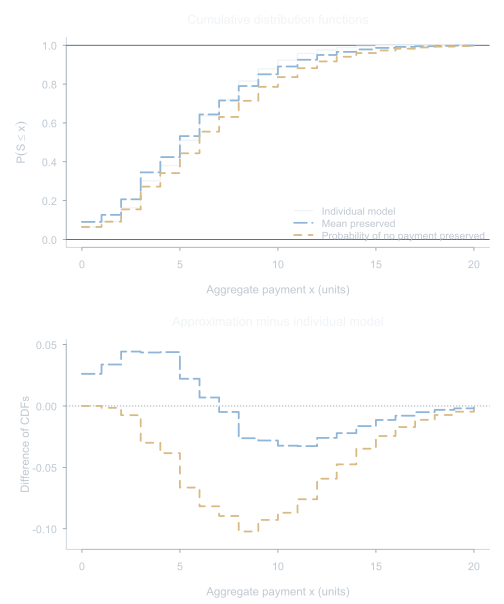
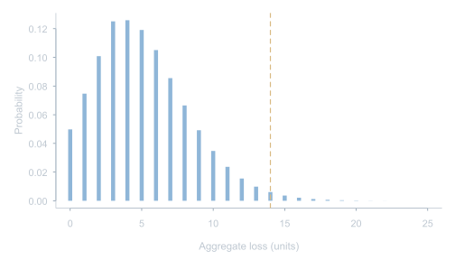

Individual and collective models of aggregate losses
Chapter 5
How can we determine the distribution of an insurer’s total payments over a year? Adding the losses of individual policies gives a natural model, called the individual model. Its expectation is easy to compute, but computing its distribution may require many convolutions of different laws. This becomes an obstacle when we want to evaluate tail probabilities, Value-at-Risk, Expected Shortfall or premiums for stop-loss reinsurance contracts.
The collective model offers another description: count the claims that occur, then add their amounts. It separates frequency from severity and can make the aggregate distribution easier to compute. We shall examine how this model relates to the individual model, which features a compound Poisson approximation can preserve, and how Panjer’s recursion turns the collective description into a computational method.
5.1 Counting claims: classical distributions on the non-negative integers
In the collective model, \(N\) will denote the number of claims that give rise to a positive payment over the observation period. It takes values in \(\mathbb N\), including zero. We first review the classical distributions on \(\mathbb N\) and the transforms used to study them.
5.1.1 Probability generating functions
For an \(\mathbb N\)-valued random variable \(N\), its probability generating function is
\[ G_N(z)=\mathbb E[z^N] =\sum_{n=0}^{\infty}\mathbb P(N=n)z^n, \quad 0\leq z\leq1, \]
with \(0^0=1\). This transform is specific to integer-valued non-negative variables. Its power-series structure makes it particularly useful for recovering probabilities, computing moments and identifying distributions of sums of independent random variables.
The series has radius of convergence at least one and can be differentiated term by term for \(|z|<1\). In particular,
\[ \begin{aligned} G_N(0)&=\mathbb P(N=0),\\ G_N(1)&=1,\\ \mathbb P(N=n)&=\frac{G_N^{(n)}(0)}{n!}. \end{aligned} \]
Thus \(G_N\) determines the distribution of \(N\). For every integer \(r\geq1\) and \(0\leq z<1\),
\[ G_N^{(r)}(z) =\sum_{n=r}^{\infty}\frac{n!}{(n-r)!}\mathbb P(N=n)z^{n-r}. \]
All coefficients are non-negative. As \(z\uparrow1\), monotone convergence gives
\[ \boxed{ \begin{aligned} G_N^{(r)}(1-) &:=\lim_{z\uparrow1}G_N^{(r)}(z)\\ &\phantom{:}=\mathbb E[N(N-1)\cdots(N-r+1)]. \end{aligned}} \]
The notation \(G_N^{(r)}(1-)\) denotes a limit in \([0,+\infty]\). If \(\mathbb E[N^r]<\infty\), the derivatives up to order \(r\) extend continuously to \(1\) from the left. Applying the mean value theorem to \(G_N^{(r-1)}\) on \([z,1]\) then shows that \(G_N^{(r)}(1-)\) is its usual derivative from the left at \(1\).
In particular,
\[ \begin{aligned} G_N'(1-)&=\mathbb E[N],\\ G_N''(1-)&=\mathbb E[N(N-1)], \end{aligned} \]
even when these quantities are infinite. If \(N\) is square-integrable, then
\[ \boxed{ \begin{aligned} \mathbb V(N) &=G_N''(1-)+G_N'(1-)\\ &\quad-G_N'(1-)^2. \end{aligned}} \]
Finally, if \(N_1,N_2\) are independent counting variables,
\[ \boxed{G_{N_1+N_2}(z)=G_{N_1}(z)G_{N_2}(z).} \]
Indeed, \(z^{N_1+N_2}=z^{N_1}z^{N_2}\) and independence factors the expectation.
5.1.2 Laplace transforms
The same principle extends beyond integer-valued variables. For a non-negative random variable \(X\), its Laplace transform is
\[ L_X(t)=\mathbb E[e^{-tX}],\quad t\geq0. \]
It is always finite, since \(0\leq e^{-tX}\leq1\). For a counting variable,
\[ L_N(t)=G_N(e^{-t}). \]
Thus the probability generating function, on \((0,1]\), is a Laplace transform after a change of variable. Laplace transforms determine distributions on \(\mathbb R_+\) and satisfy
\[ L_{X_1+X_2}(t)=L_{X_1}(t)L_{X_2}(t) \]
for independent non-negative \(X_1,X_2\). Unlike a probability generating function, they apply directly to non-integer claim amounts, including distributions with atoms and a continuous part. No moment assumption is needed for these identities.
5.1.3 Bernoulli and binomial distributions: a fixed number of trials
A Bernoulli trial has two outcomes, traditionally called success and failure, with success probability \(p\in[0,1]\). Its success indicator has distribution \(\mathcal B(p)\), with
\[ \mathbb P(N=1)=p \quad\text{and}\quad \mathbb P(N=0)=1-p. \]
Consequently,
\[ \begin{aligned} G_N(z)&=1-p+pz,\\ \mathbb E[N]&=p,\\ \mathbb V(N)&=p(1-p). \end{aligned} \]
Now consider \(n\) independent trials with the same success probability. If \(N_1,\ldots,N_n\) are their indicators, then
\[ N=N_1+\cdots+N_n\sim\mathcal B(n,p), \]
the binomial distribution. For \(k\in\{0,\ldots,n\}\),
\[ \boxed{\mathbb P(N=k)=\binom nk p^k(1-p)^{n-k}.} \]
There are \(\binom nk\) choices of the \(k\) successful trials, each with probability \(p^k(1-p)^{n-k}\). Independence also gives
\[ \begin{aligned} G_N(z)&=(1-p+pz)^n,\\ \mathbb E[N]&=np,\\ \mathbb V(N)&=np(1-p). \end{aligned} \]
For example, this counts the policies with at least one claim among \(n\) independent policies sharing the same claim probability. It does not count multiple claims under the same policy.
For independent \(N_1\sim\mathcal B(n_1,p)\) and \(N_2\sim\mathcal B(n_2,p)\),
\[ N_1+N_2\sim\mathcal B(n_1+n_2,p), \]
as follows by multiplying generating functions. The common parameter \(p\) is essential. Counting failures instead gives \(n-N\sim\mathcal B(n,1-p)\).
5.1.4 Geometric distribution: waiting for the first success
Repeat independent Bernoulli trials with success probability \(p\in(0,1)\) until the first success. Let \(N\) count the failures before that success. The event \(\{N=n\}\) consists of \(n\) failures followed by a success, so
\[ \boxed{\mathbb P(N=n)=p(1-p)^n,\quad n\in\mathbb N.} \]
We write \(N\sim\mathcal G_0(p)\). Another common convention counts all trials up to and including the success. This corresponds to \(N+1\).
Summing a geometric series and differentiating give
\[ \begin{aligned} G_N(z)&=\frac p{1-(1-p)z},\\ \mathbb E[N]&=\frac{1-p}{p},\\ \mathbb V(N)&=\frac{1-p}{p^2}. \end{aligned} \]
The geometric distribution is familiar for its memoryless property. Since \(\mathbb P(N\geq n)=(1-p)^n\), for \(r,s\in\mathbb N\),
\[ \mathbb P(N\geq r+s\mid N\geq r) =\frac{(1-p)^{r+s}}{(1-p)^r} =\mathbb P(N\geq s). \]
After \(r\) failures, the number of further failures before success has the same distribution as initially. The geometric law is also the first case of the family presented below (which may be new to some students).
5.1.5 Negative binomial distribution: waiting for several successes
Fix \(r\in\mathbb N^*\) and stop at the \(r\)th success. Let \(N\) count the failures before that success. On \(\{N=n\}\), the last trial is a success, and the preceding \(n+r-1\) trials contain \(n\) failures and \(r-1\) successes. Hence, for \(n\in\mathbb N\),
\[ \boxed{\mathbb P(N=n)=\binom{n+r-1}{n}p^r(1-p)^n.} \]
This is the negative binomial distribution, denoted \(\mathcal{NB}(r,p)\). It is also the law of a sum of \(r\) independent \(\mathcal G_0(p)\) variables, counting failures before the first success and between successive successes. In particular, \(\mathcal{NB}(1,p)=\mathcal G_0(p)\). Independence gives
\[ G_N(z)=\left(\frac p{1-(1-p)z}\right)^r. \]
Adding the means and variances of the \(r\) independent failure counts gives
\[ \begin{aligned} \mathbb E[N]&=\frac{r(1-p)}p,\\ \mathbb V(N)&=\frac{r(1-p)}{p^2}. \end{aligned} \]
For independent \(N_1\sim\mathcal{NB}(r_1,p)\) and \(N_2\sim\mathcal{NB}(r_2,p)\),
\[ N_1+N_2\sim\mathcal{NB}(r_1+r_2,p). \]
A characteristic feature of this family is that
\[ \mathbb V(N)=\frac1p\mathbb E[N]>\mathbb E[N]. \]
The variance exceeds the mean: the distribution is overdispersed.
5.1.6 Poisson distribution: rare events and exponential waiting times
For \(\lambda>0\), the Poisson distribution \(\mathcal P(\lambda)\) is defined by
\[ \boxed{\mathbb P(N=n)=e^{-\lambda}\frac{\lambda^n}{n!}, \quad n\in\mathbb N.} \]
The exponential series shows that these probabilities sum to one. Two constructions explain the role of this law in counting events.
A limit of binomial distributions. Fix \(\lambda>0\) and let
\[ N_n\sim\mathcal B\left(n,\frac\lambda n\right),\quad n>\lambda. \]
The number of trials increases, their success probability decreases, and \(\mathbb E[N_n]=\lambda\) stays fixed. For every fixed \(k\in\mathbb N\) and every \(n\geq k\) in this sequence,
\[ \begin{aligned} \mathbb P(N_n=k) &=\binom nk\left(\frac\lambda n\right)^k \left(1-\frac\lambda n\right)^{n-k}\\ &=\frac{\lambda^k}{k!} \left(\prod_{j=0}^{k-1}\left(1-\frac jn\right)\right) \left(1-\frac\lambda n\right)^n \left(1-\frac\lambda n\right)^{-k}\\ &\longrightarrow_{n \to +\infty} e^{-\lambda}\frac{\lambda^k}{k!}. \end{aligned} \]
Thus \(N_n\) converges in distribution to \(\mathcal P(\lambda)\).
For instance, the number of people wearing red trousers encountered during one hour in the street may be approximately Poisson when many people pass, each has a small probability of wearing red trousers, and their choices are approximately independent. The parameter combines the flow of pedestrians with the frequency of red trousers – of course a coordinated group wearing the same clothes would violate the independence assumption. Similarly, a large portfolio with small, comparable and independent claim probabilities suggests a Poisson approximation for the number of policies with a claim.
Exponential times between events. Let \(T_1,T_2,\ldots\) be i.i.d. exponential variables with rate \(\lambda>0\):
\[ \mathbb P(T_j>t)=e^{-\lambda t},\quad t\geq0. \]
The exponential law is memoryless: for \(s,t\geq0\),
\[ \mathbb P(T_j>s+t\mid T_j>s) =\frac{e^{-\lambda(s+t)}}{e^{-\lambda s}} =e^{-\lambda t} =\mathbb P(T_j>t). \]
The elapsed waiting time does not change the distribution of the remaining wait. Define the event times
\[ \tau_0=0 \quad\text{and}\quad \tau_n=T_1+\cdots+T_n\quad(n\geq1), \]
and the number of events by time \(t\),
\[ N(t)=\max\{n\in\mathbb N:\tau_n\leq t\}. \]
The law of large numbers gives \(\tau_n/n\to1/\lambda\) almost surely, so this count is finite almost surely for every finite \(t\). Moreover,
\[ \boxed{N(t)\sim\mathcal P(\lambda t).} \]
Indeed, \(\mathbb P(N(t)=0)=\mathbb P(T_1>t)=e^{-\lambda t}\). For \(n\geq1\), convolution of the exponential densities shows that the \(n\)th arrival time has a Gamma distribution, \(\tau_n\sim\operatorname{Gamma}(n,\lambda)\), with shape \(n\), rate \(\lambda\) and density
\[ f_{\tau_n}(u)=\frac{\lambda^n u^{n-1}e^{-\lambda u}}{(n-1)!}, \quad u>0. \]
Independence of \(\tau_n\) and \(T_{n+1}\) then yields
\[ \begin{aligned} \mathbb P(N(t)=n) &=\mathbb P(\tau_n\leq t<\tau_n+T_{n+1})\\ &=\int_0^t\frac{\lambda^n u^{n-1}e^{-\lambda u}}{(n-1)!} e^{-\lambda(t-u)}\,\mathrm du\\ &=e^{-\lambda t}\frac{(\lambda t)^n}{n!}. \end{aligned} \]
This constructs a homogeneous Poisson process. Its counts on disjoint time intervals are independent, and a count over an interval of length \(t\) has distribution \(\mathcal P(\lambda t)\). Here \(\lambda\) is a rate per unit time; the mean count over a period of length \(t\) is \(\lambda t\).
The number of buses arriving at a stop need not follow this model. Scheduled intervals between buses are not exponential: knowing how long one has waited can change the distribution of the remaining wait. Traffic jams can also create dependence between successive intervals.
Other motivations. A further limiting construction starts from negative binomial distributions. Fix \(\lambda>0\) and let \(N_r\sim\mathcal{NB}(r,p_r)\) with \(p_r=r/(r+\lambda)\). Before each successive success, the mean number of failures is \((1-p_r)/p_r=\lambda/r\), so the total number of failures before the \(r\)th success has mean \(\lambda\). For each \(0\leq z\leq1\), as \(r\) tends to infinity through the positive integers,
\[ G_{N_r}(z) =\left(\frac{p_r}{1-(1-p_r)z}\right)^r =\left(1+\frac{\lambda(1-z)}r\right)^{-r} \longrightarrow e^{\lambda(z-1)}. \]
The limit is the generating function of \(\mathcal P(\lambda)\), as the exponential series shows. By the continuity theorem for generating functions, \(N_r\) therefore converges in distribution to \(\mathcal P(\lambda)\).
The Poisson law also arises in the classical hat problem. Suppose \(n\) guests hand in their hats, which are returned according to a uniformly random permutation of \(\{1,\ldots,n\}\). Let \(H_n\) count the guests who receive their own hat. These are precisely the fixed points of the permutation. A classical result is that \(H_n\) converges in distribution to \(\mathcal P(1)\) as \(n\to\infty\).
5.1.7 Poisson moments, transforms and aggregation
For \(N\sim\mathcal P(\lambda)\),
\[ G_N(z)=e^{-\lambda}\sum_{n=0}^{\infty}\frac{(\lambda z)^n}{n!} =e^{\lambda(z-1)}. \]
Consequently,
\[ \begin{aligned} L_N(t)&=e^{\lambda(e^{-t}-1)},\\ \mathbb E[N]&=\mathbb V(N)=\lambda. \end{aligned} \]
We also allow \(\lambda=0\), corresponding to \(N=0\) almost surely. If \(N_1\sim\mathcal P(\lambda_1)\) and \(N_2\sim\mathcal P(\lambda_2)\) are independent, their generating functions multiply to give
\[ \boxed{N_1+N_2\sim\mathcal P(\lambda_1+\lambda_2).} \]
5.1.8 Comparing the counting distributions
In the table below, \(0<p<1\), \(n,r\in\mathbb N^*\) and \(\lambda\geq0\). Laplace transforms follow by substituting \(z=e^{-t}\).
| Distribution | Values | Expectation | Variance | Generating function \(G(z)\) |
|---|---|---|---|---|
| \(\mathcal B(p)\) | \(0,1\) | \(p\) | \(p(1-p)\) | \(1-p+pz\) |
| \(\mathcal B(n,p)\) | \(0,\ldots,n\) | \(np\) | \(np(1-p)\) | \((1-p+pz)^n\) |
| \(\mathcal G_0(p)\) | \(\mathbb N\) | \((1-p)/p\) | \((1-p)/p^2\) | \(p/(1-(1-p)z)\) |
| \(\mathcal{NB}(r,p)\) | \(\mathbb N\) | \(r(1-p)/p\) | \(r(1-p)/p^2\) | \((p/(1-(1-p)z))^r\) |
| \(\mathcal P(\lambda)\) | \(\mathbb N\) | \(\lambda\) | \(\lambda\) | \(e^{\lambda(z-1)}\) |
These families differ both in their possible values and in how their variance relates to their mean. At a given positive mean, a non-degenerate binomial count has variance below the mean, a Poisson count has variance equal to the mean, and a geometric or negative binomial count has variance above it.
5.2 Claim amounts, heterogeneity and mixtures
5.2.1 Two roles for distributions on \(\mathbb R_+\)
Common severity models include the exponential, Gamma, lognormal, Weibull, Fréchet, Pareto and generalised Pareto distributions. Their support and parameterisation must be checked when using a numerical library in Python, R or another language. In particular, a Gamma rate is the reciprocal of a Gamma scale, and different Pareto conventions have different lower endpoints.
Such laws can describe claim amounts, whose tails affect large-loss probabilities and stop-loss payments. They can also describe policyholder characteristics: annual mileage, insured property values or an unobserved accident propensity. In the latter case, a continuous variable may determine a parameter of the claim-count distribution. Combining groups with different parameters then leads to a mixture.
5.2.2 Mixtures and conditional expectations
Definition 5.1 (Mixture of distributions) Let \(\Theta\) have CDF \(G\), and let \((F_\theta)_\theta\) be a family of CDFs such that \(\theta\mapsto F_\theta(x)\) is measurable for every \(x\). Suppose that, for every bounded Borel function \(\varphi\),
\[ \mathbb E[\varphi(X)\mid\Theta] =\int_{\mathbb R}\varphi(x)\,\mathrm dF_\Theta(x) \quad\text{almost surely}. \]
Then we say that the distribution of \(X\) is the mixture of the component distributions \(F_\theta\) with mixing CDF \(G\).
Taking expectations gives
\[ \mathbb E[\varphi(X)] =\int_{\mathbb R}\left(\int_{\mathbb R}\varphi(x)\,\mathrm dF_\theta(x)\right) \,\mathrm dG(\theta). \]
In particular, using an indicator function,
\[ \boxed{F_X(x)=\mathbb E[F_\Theta(x)] =\int_{\mathbb R}F_\theta(x)\,\mathrm dG(\theta).} \]
If \(\Theta\) takes values \(\theta_1,\ldots,\theta_m\) with probabilities \(w_1,\ldots,w_m\) satisfying \(\sum_{j=1}^m w_j=1\), then \(F_X=\sum_{j=1}^m w_jF_{\theta_j}\). To sample from this mixture, choose one component with the indicated probabilities and draw one observation from it.
When \(X\) is square-integrable, the law of total variance gives
\[ \mathbb V(X)=\mathbb E[\mathbb V(X\mid\Theta)] +\mathbb V(\mathbb E[X\mid\Theta]). \]
5.2.3 Mixed Poisson counts
Let \(\Lambda\geq0\) be a random variable modelling the Poisson parameter for the observation period. Specify the count \(N\) by
\[ \mathbb E[\varphi(N)\mid\Lambda] =\sum_{n=0}^{\infty}\varphi(n)e^{-\Lambda}\frac{\Lambda^n}{n!} \quad\text{almost surely} \]
for every bounded function \(\varphi\) on \(\mathbb N\). For example, \(\Lambda\) may represent the annual accident propensity of a randomly selected policyholder.
Taking \(\varphi\) to be an indicator, or a power \(n\mapsto z^n\), yields
\[ \begin{gathered} \mathbb P(N=n)=\mathbb E\left[e^{-\Lambda}\frac{\Lambda^n}{n!}\right],\\ \boxed{G_N(z)=\mathbb E[e^{-(1-z)\Lambda}]=L_\Lambda(1-z).} \end{gathered} \]
If \(\mathbb E[\Lambda]<\infty\), then \(\mathbb E[N\mid\Lambda]=\Lambda\) and therefore \(\mathbb E[N]=\mathbb E[\Lambda]\). If \(\Lambda\) is square-integrable, \(N\) is also square-integrable and \(\mathbb V(N\mid\Lambda)=\Lambda\), so
\[ \boxed{\mathbb V(N)=\mathbb E[\Lambda]+\mathbb V(\Lambda).} \]
Variation in the Poisson parameter across policyholders adds \(\mathbb V(\Lambda)\) to the variance of the count for a randomly selected policyholder.
5.2.4 Gamma mixing and the negative binomial distribution
The arrival times of a Poisson process gave us Gamma distributions with integer shape. To allow any real shape \(r>0\), we use the Gamma function
\[ \Gamma(r)=\int_0^\infty x^{r-1}e^{-x}\,\mathrm dx. \]
Integration by parts gives \(\Gamma(r+1)=r\Gamma(r)\). Since \(\Gamma(1)=1\), we have \(\Gamma(n+1)=n!\) for every \(n\in\mathbb N\).
Take \(\Lambda\sim\operatorname{Gamma}(r,\beta)\), with shape \(r>0\) and rate \(\beta>0\), meaning that
\[ f_\Lambda(\ell)=\frac{\beta^r}{\Gamma(r)}\ell^{r-1}e^{-\beta\ell}, \quad \ell>0. \]
The same integral, with the substitution \(u=(\beta+t)\ell\), gives the Laplace transform
\[ L_\Lambda(t)=\left(\frac{\beta}{\beta+t}\right)^r,\quad t\geq0. \]
For the corresponding mixed Poisson count and every \(n\in\mathbb N\),
\[ \begin{aligned} \mathbb P(N=n) &=\int_0^\infty e^{-\ell}\frac{\ell^n}{n!} \frac{\beta^r}{\Gamma(r)}\ell^{r-1}e^{-\beta\ell}\,\mathrm d\ell\\ &=\frac{\beta^r}{n!\,\Gamma(r)} \frac{\Gamma(n+r)}{(\beta+1)^{n+r}}\\ &=\frac{\Gamma(n+r)}{n!\,\Gamma(r)} \left(\frac\beta{\beta+1}\right)^r \left(\frac1{\beta+1}\right)^n. \end{aligned} \]
When \(r\) is an integer, the factor \(\Gamma(n+r)/(n!\,\Gamma(r))\) equals \(\binom{n+r-1}{n}\), so we recognise
\[ \boxed{N\sim\mathcal{NB}\left(r,\frac\beta{\beta+1}\right).} \]
The mixture construction works for every real \(r>0\). It therefore extends the negative binomial family to all positive shapes.
For every \(r>0\), substituting \(t=1-z\) in the Gamma Laplace transform gives
\[ G_N(z)=L_\Lambda(1-z) =\left(\frac{\beta}{\beta+1-z}\right)^r,\quad 0\leq z\leq1. \]
We now have models for the number of claims and a way to account for differences between policyholders. The insurance question concerns the total amount paid over the year. If we start with the policies, each brings its own distribution of payments. If we start with the claims, we need a model for their number and a distribution for their amounts. How do these two descriptions of the same portfolio compare?
5.3 The individual model
5.3.1 Starting from the policies
Consider \(n\) policies over a fixed period. Let \(X_i\geq0\) be the total payment under policy \(i\), and assume that \(X_1,\ldots,X_n\) are independent. They need not have the same distribution: insured values, deductibles and claim probabilities can differ across policies. The individual model describes the aggregate loss as
\[ \boxed{S^{\mathrm{ind}}=\sum_{i=1}^nX_i.} \]
Each \(X_i\) may include several payments under one policy. If the losses are integrable,
\[ \mathbb E[S^{\mathrm{ind}}]=\sum_{i=1}^n\mathbb E[X_i]. \]
If they are square-integrable, independence also gives
\[ \mathbb V(S^{\mathrm{ind}})=\sum_{i=1}^n\mathbb V(X_i). \]
Computing these moments is straightforward. Determining the full distribution requires more work.
5.3.2 Convolution of distributions
For independent real random variables \(X\) and \(Y\), conditioning on \(Y\) gives
\[ \begin{aligned} F_{X+Y}(x) &=\mathbb E[\mathbb E[\mathbf 1_{\{X+Y\leq x\}}\mid Y]]\\ &=\mathbb E[F_X(x-Y)]\\ &=\int_{\mathbb R}F_X(x-y)\,\mathrm dF_Y(y). \end{aligned} \]
We denote this operation by
\[ (F_X*F_Y)(x):=\int_{\mathbb R}F_X(x-y)\,\mathrm dF_Y(y). \]
This is the CDF of the convolution of the two probability distributions. The integration is with respect to the probability measure \(\mathrm dF_Y(y)\). In the convolution of functions familiar from signal processing or Fourier analysis, integration is with respect to \(\mathrm dy\). When \(X\) and \(Y\) have densities, the density of their sum is the usual convolution of densities
\[ f_{X+Y}(x)=\int_{\mathbb R}f_X(x-y)f_Y(y)\,\mathrm dy. \]
The CDF formula requires no densities. This is useful for insurance payments, which often have an atom at zero or at a contractual limit. For non-negative \(X,Y\) and \(x\geq0\),
\[ (F_X*F_Y)(x)=\int_{[0,x]}F_X(x-y)\,\mathrm dF_Y(y). \]
The endpoint \(y=0\) must be included when \(Y\) can be zero. The endpoint \(y=x\) must also be included when \(Y\) can equal \(x\) and \(X\) can be zero. For example, if both variables are identically zero, the integral over \([0,0]\) equals one, whereas omitting its endpoint would give zero.
Iterating the convolution gives
\[ \begin{aligned} F_{S^{\mathrm{ind}}}&=F_{X_1}*\cdots*F_{X_n},\\ L_{S^{\mathrm{ind}}}(t)&=\prod_{i=1}^nL_{X_i}(t). \end{aligned} \]
The product gives the aggregate Laplace transform directly. Extracting a quantile or a stop-loss premium from it generally requires further calculation.
5.3.3 Why introduce a collective model?
For a large heterogeneous portfolio, repeated convolution can be costly and rarely gives an explicit formula. Direct simulation also requires generating each policy loss in every scenario. In a low-frequency portfolio, most of these simulated losses are zero.
This suggests modelling the number of positive payments and their amounts directly. Such a description can reduce the number of distributions to specify and the cost of simulation. It may also yield a recursion for the aggregate probabilities. To assess the simplification, we will compare its predictions with those of the individual model.
5.4 The collective model and compound distributions
5.4.1 Starting from the claims
List the claims that give rise to a strictly positive payment, in order of arrival. In a year with at least \(j\) such claims, \(Y_j\) is the amount paid on the \(j\)th one.
Let \(N\) count these paid claims over the year. We model their successive amounts \((Y_j)_{j\geq1}\) as i.i.d. positive random variables with a common CDF \(F\), pooling claims from all policies. We assume that the sequence is independent of \(N\). Thus, given that \(n\) paid claims occurred, their amounts are still independent with CDF \(F\). A tendency for individual payments to be larger in high-count years would violate this assumption. The collective model gives the annual payment as
\[ \boxed{S^{\mathrm{coll}}=\sum_{j=1}^NY_j,} \]
with the empty sum equal to zero. The law of \(N\) is the frequency distribution, and the law of \(Y_1\) is the severity distribution. The resulting law of the total is a compound distribution.
Since each claim amount is strictly positive with probability one, the events \(\{S^{\mathrm{coll}}=0\}\) and \(\{N=0\}\) coincide up to an event of probability zero.
5.4.2 Distribution and Laplace transform
For \(n\geq1\), let \(F^{*n}\) be the CDF of a sum of \(n\) independent variables with CDF \(F\), and set
\[ F^{*0}(x)=\mathbf 1_{\{x\geq0\}}. \]
Conditioning on \(N\) gives
\[ \boxed{F_{S^{\mathrm{coll}}}(x) =\sum_{n=0}^{\infty}\mathbb P(N=n)F^{*n}(x).} \]
A compound distribution is therefore a mixture of convolution powers. It differs from the mixtures considered earlier in the choice of its components: here the count selects how many claim amounts are added.
For \(t\geq0\), independence yields
\[ \mathbb E[e^{-tS^{\mathrm{coll}}}\mid N] =L_{Y_1}(t)^N. \]
Taking expectations, we obtain
\[ \boxed{L_{S^{\mathrm{coll}}}(t)=G_N\bigl(L_{Y_1}(t)\bigr).} \]
This identity needs no moment assumption. Directly evaluating the CDF still involves convolution powers; Panjer’s recursion will allow us to avoid computing them separately.
5.4.3 Expectation and variance
Proposition 5.1 (Moments of a compound sum) If \(\mathbb E[N]<\infty\) and \(\mathbb E[Y_1]<\infty\), then
\[ \boxed{\mathbb E[S^{\mathrm{coll}}]=\mathbb E[N]\mathbb E[Y_1].} \]
If, in addition, \(\mathbb E[N^2]<\infty\) and \(\mathbb E[Y_1^2]<\infty\), then \(S^{\mathrm{coll}}\) is square-integrable and
\[ \boxed{\mathbb V(S^{\mathrm{coll}}) =\mathbb E[N]\mathbb V(Y_1) +\mathbb V(N)\mathbb E[Y_1]^2.} \]
Proof. Write \(\mu=\mathbb E[Y_1]\). Given \(N=n\), the sum has mean \(n\mu\), so \(\mathbb E[S^{\mathrm{coll}}\mid N]=N\mu\). Taking expectations gives the first formula.
Under the second-moment assumptions, Cauchy–Schwarz and independence give
\[ \mathbb E[(S^{\mathrm{coll}})^2] \leq\mathbb E\!\left[N\sum_{j=1}^N Y_j^2\right] =\mathbb E[N^2]\,\mathbb E[Y_1^2]<\infty. \]
Given \(N=n\), the \(n\) independent amounts have total variance \(n\mathbb V(Y_1)\). The law of total variance now gives
\[ \begin{aligned} \mathbb V(S^{\mathrm{coll}}) &=\mathbb E[\mathbb V(S^{\mathrm{coll}}\mid N)] +\mathbb V(\mathbb E[S^{\mathrm{coll}}\mid N])\\ &=\mathbb E[N]\mathbb V(Y_1)+\mathbb V(N)\mu^2. \end{aligned} \]
The first term measures how the amounts vary for a given count. The second measures how the conditional mean payment varies with the count.
5.4.4 Compound Poisson distributions
When \(N\sim\mathcal P(\lambda)\), we write
\[ S\sim\mathcal{CP}(\lambda,F). \]
The preceding formulas become
\[ \boxed{ \begin{aligned} L_S(t)&=\exp\bigl(\lambda(L_{Y_1}(t)-1)\bigr),\\ \mathbb P(S=0)&=e^{-\lambda}. \end{aligned}} \]
If the relevant moments are finite,
\[ \begin{aligned} \mathbb E[S]&=\lambda\mathbb E[Y_1],\\ \mathbb V(S)&=\lambda\mathbb E[Y_1^2]. \end{aligned} \]
The variance involves the second moment of a claim amount, rather than its variance alone.
5.4.5 Adding independent compound Poisson portfolios
Proposition 5.2 (Superposition of compound Poisson distributions) Let \(S_1\sim\mathcal{CP}(\lambda_1,F_1)\) and \(S_2\sim\mathcal{CP}(\lambda_2,F_2)\) be independent, with \(\lambda_1+\lambda_2>0\). Then
\[ \boxed{S_1+S_2\sim\mathcal{CP}\left(\lambda_1+\lambda_2,F\right),} \] where \(F\) is the severity mixture \[ F=\frac{\lambda_1F_1+\lambda_2F_2}{\lambda_1+\lambda_2}. \]
Proof. Let \(L_1,L_2\) be the Laplace transforms of the severity distributions. Independence gives
\[ \begin{aligned} L_{S_1+S_2}(t) &=\exp\bigl(\lambda_1(L_1(t)-1)+\lambda_2(L_2(t)-1)\bigr)\\ &=\exp\left((\lambda_1+\lambda_2) \left(\frac{\lambda_1L_1(t)+\lambda_2L_2(t)}{\lambda_1+\lambda_2}-1\right)\right). \end{aligned} \]
The fraction is the transform of the severity mixture in the statement. Uniqueness of Laplace transforms concludes the proof.
Thus the intensities add, while the severity distributions mix with weights proportional to those intensities.
More generally, suppose \(Z_i\sim\mathcal{CP}(\lambda_i,F_i)\) are independent, and at least one intensity is positive. Set
\[ \begin{aligned} \lambda&=\sum_{i=1}^n\lambda_i,\\ F&=\frac{\sum_{i=1}^n\lambda_iF_i}{\lambda}. \end{aligned} \]
Then \(\sum_{i=1}^n Z_i\sim\mathcal{CP}(\lambda,F)\).
5.5 From the individual model to a compound Poisson model
5.5.1 Separating zero payments from positive payments
Return to the independent policy losses \(X_1,\ldots,X_n\). Write
\[ \begin{aligned} p_i&=\mathbb P(X_i=0),\\ q_i&=\mathbb P(X_i>0)=1-p_i. \end{aligned} \]
We assume throughout that \(q_i>0\) for every policy \(i=1,\ldots,n\). Let \(\widetilde F_i(x)=\mathbb P(X_i\leq x\mid X_i>0)\) be the conditional CDF of the annual payment under policy \(i\) given that it is positive. Let \(\widetilde X_i\) have CDF \(\widetilde F_i\) and take \(B_i\sim\mathcal B(q_i)\) independent of \(\widetilde X_i\). Then \(B_i\widetilde X_i\) has the same distribution as \(X_i\).
\[ X_i\; \begin{array}{cl} \overset{p_i}{\nearrow} & 0\\[2pt] \underset{q_i}{\searrow} & \widetilde X_i\sim\widetilde F_i \end{array} \]
Since \(\widetilde X_i>0\) almost surely,
\[ \begin{aligned} \widetilde F_i(0)&=0,\\ F_{X_i}(x)&=p_i+q_i\widetilde F_i(x)\quad(x\geq0). \end{aligned} \]
Here \(\widetilde X_i\) represents the total positive payment under policy \(i\) over the period. If a policy generates several physical claims, this need not be the amount of a single claim.
Replace each \(X_i\) by an independent variable
\[ Z_i\sim\mathcal{CP}(\lambda_i,\widetilde F_i). \]
The positive-payment distribution is kept fixed. Choosing \(\lambda_i\) amounts to choosing which feature of the original policy loss to preserve. Superposition then gives one compound Poisson law for the whole portfolio.
5.5.2 First choice: preserve the expectation
Assume \(\mu_i=\mathbb E[\widetilde X_i]<\infty\). Then \(\mu_i>0\) and
\[ \begin{aligned} \mathbb E[X_i]&=q_i\mu_i,\\ \mathbb E[Z_i]&=\lambda_i\mu_i. \end{aligned} \]
The unique intensity preserving the expectation is therefore
\[ \boxed{\lambda_i=q_i.} \]
The resulting portfolio loss \(S^{\mathrm{coll},1}=\sum_{i=1}^n Z_i\) has compound Poisson law \(\mathcal{CP}(\lambda^{(1)},F^{(1)})\), where
\[ \begin{aligned} \lambda^{(1)}&=\sum_{i=1}^n q_i,\\ F^{(1)}&=\frac{\sum_{i=1}^n q_i\widetilde F_i}{\lambda^{(1)}}. \end{aligned} \]
Thus \(\mathbb E[S^{\mathrm{coll},1}]=\mathbb E[S^{\mathrm{ind}}]\). In the individual portfolio, \(\sum_j q_j\) is the expected number of policies with a positive annual payment. Policy \(i\) contributes a share \(q_i/\sum_jq_j\) of that expected count, which gives its weight in \(F^{(1)}\).
Assume now that \(m_{2,i}=\mathbb E[\widetilde X_i^2]<\infty\). Since \(B_i^2=B_i\) and \(B_i\) is independent of \(\widetilde X_i\),
\[ \begin{gathered} \mathbb E[X_i^2]=\mathbb E[B_i^2]\,\mathbb E[\widetilde X_i^2]=q_i m_{2,i},\\ \mathbb E[X_i]^2=q_i^2\mu_i^2. \end{gathered} \]
Thus \(\mathbb V(X_i)=q_i m_{2,i}-q_i^2\mu_i^2\). For the compound Poisson loss the variance formula gives \(\mathbb V(Z_i)=\lambda_i\mathbb E[\widetilde X_i^2]=q_i m_{2,i}\).
By independence,
\[ \boxed{\mathbb V(S^{\mathrm{coll},1})-\mathbb V(S^{\mathrm{ind}}) =\sum_{i=1}^nq_i^2\mu_i^2>0.} \]
The approximation therefore preserves the mean and increases the variance.
Its relevance for rare claims is also visible in the transforms:
\[ \begin{aligned} L_{S^{\mathrm{ind}}}(t) &=\prod_{i=1}^n\left[1+q_i\bigl(L_{\widetilde X_i}(t)-1\bigr)\right],\\ L_{S^{\mathrm{coll},1}}(t) &=\exp\left(\sum_{i=1}^nq_i\bigl(L_{\widetilde X_i}(t)-1\bigr)\right). \end{aligned} \]
Fix \(t\geq0\) and put \(a_i(t)=q_i(1-L_{\widetilde X_i}(t))\). Since \(0\leq L_{\widetilde X_i}(t)\leq1\), we have \(0\leq a_i(t)\leq q_i\). Suppose the payment probabilities satisfy \(q_i\leq\delta<1\). For \(0\leq a\leq\delta\), the logarithmic series gives
\[ \begin{aligned} 0\leq -a-\log(1-a) &=\sum_{k=2}^{\infty}\frac{a^k}{k} \leq\frac12\sum_{k=2}^{\infty}a^k\\ &=\frac{a^2}{2(1-a)} \leq\frac{a^2}{2(1-\delta)}. \end{aligned} \]
The individual transform is \(\prod_i(1-a_i(t))\), while the collective transform is \(\exp(-\sum_i a_i(t))\). Taking logarithms and applying the bound term by term gives
\[ \begin{aligned} 0&\leq\log L_{S^{\mathrm{coll},1}}(t)-\log L_{S^{\mathrm{ind}}}(t)\\ &=\sum_{i=1}^n[-a_i(t)-\log(1-a_i(t))] \leq\frac{\sum_{i=1}^n q_i^2}{2(1-\delta)}. \end{aligned} \]
Thus \(\sum_iq_i^2\) controls the difference between the two log transforms uniformly in \(t\geq0\).
5.5.3 What follows from the variance comparison?
Let \(\mu\) be the common mean and write \(v_{\mathrm{ind}}=\mathbb V(S^{\mathrm{ind}})\) and \(v_1=\mathbb V(S^{\mathrm{coll},1})\). For an exceedance above \(\mu+h\) with \(h>0\), we can use Cantelli’s inequality from Chapter 3. Since \(v\mapsto v/(v+h^2)\) is increasing,
\[ \mathbb P(S^{\mathrm{ind}}\geq\mu+h) \leq\frac{v_{\mathrm{ind}}}{v_{\mathrm{ind}}+h^2} \leq\frac{v_1}{v_1+h^2}. \]
The collective variance therefore gives an upper bound on the individual exceedance probability. The actual tail probabilities of the two models can cross.
Mean matching puts more probability at zero. Since \(q_i>0\), we have \(1-q_i<e^{-q_i}\) for every \(i\). Hence
\[ \mathbb P(S^{\mathrm{ind}}=0) =\prod_{i=1}^n(1-q_i) <e^{-\sum_{i=1}^n q_i} =\mathbb P(S^{\mathrm{coll},1}=0). \]
For any confidence level strictly above the first probability and at most the second, the collective VaR is zero. The individual VaR is strictly positive by right-continuity of the individual CDF at zero.
For example, take one policy \(X\sim\mathcal B(0.1)\) with a unit positive payment. Its mean-preserving approximation is \(Z\sim\mathcal P(0.1)\). At \(\alpha=0.902\),
\[ \mathbb P(X=0)=0.9<\alpha<e^{-0.1}=\mathbb P(Z=0), \]
so \(\operatorname{VaR}_\alpha(X)=1\) while \(\operatorname{VaR}_\alpha(Z)=0\). At the threshold zero we have \(\mathbb P(Z>0)<\mathbb P(X>0)\), whereas at one we have \(\mathbb P(Z>1)>0=\mathbb P(X>1)\). Can a different choice of intensity give an upper bound for every tail probability?
5.5.4 Second choice: preserve the probability of no payment
For this second choice, assume in addition that \(p_i>0\) for every policy, or equivalently that \(q_i<1\). With strictly positive severities, a compound Poisson loss is zero exactly when its count is zero. Hence \(\mathbb P(Z_i=0)=e^{-\lambda_i}\), and the unique finite intensity that matches \(p_i\) is
\[ \boxed{\lambda_i=-\log p_i=-\log(1-q_i).} \]
By superposition, \(S^{\mathrm{coll},2}=\sum_{i=1}^n Z_i\) has compound Poisson law \(\mathcal{CP}(\lambda^{(2)},F^{(2)})\), where
\[ \begin{aligned} \lambda^{(2)}&=\sum_{i=1}^n(-\log p_i),\\ F^{(2)}&=\frac{\sum_{i=1}^n(-\log p_i)\widetilde F_i}{\lambda^{(2)}}. \end{aligned} \]
Independence gives the same probability of no payment for the two portfolios,
\[ \mathbb P(S^{\mathrm{ind}}=0)=\prod_{i=1}^n p_i =e^{-\lambda^{(2)}}=\mathbb P(S^{\mathrm{coll},2}=0). \]
The price of matching this probability can be seen in the mean. For \(0<q<1\),
\[ -\log(1-q)-q=\sum_{k=2}^\infty\frac{q^k}{k}>0. \]
The two intensities thus differ by \(q_i^2/2+O(q_i^3)\) as \(q_i\to0\). For finite severity means \(\mu_i\), the increase in expected payment is
\[ \mathbb E[S^{\mathrm{coll},2}]-\mathbb E[S^{\mathrm{ind}}] =\sum_{i=1}^n\bigl(-\log(1-q_i)-q_i\bigr)\mu_i>0. \]
The two models now have the same probability of a positive payment. How do their probabilities of exceeding a positive threshold compare?
Proposition 5.3 (Loss probabilities under the second choice) For \(\lambda_i=-\log p_i\) and severity CDF \(\widetilde F_i\),
\[ \boxed{F_{Z_i}(x)\leq F_{X_i}(x)\quad\text{for every }x\in\mathbb R.} \]
Proof. For \(x<0\), both CDFs vanish. For \(x\geq0\), let \(Y_{i,1},Y_{i,2},\ldots\) be independent with CDF \(\widetilde F_i\). For every \(n\geq1\), positivity gives
\[ \widetilde F_i^{*n}(x) =\mathbb P(Y_{i,1}+\cdots+Y_{i,n}\leq x) \leq\mathbb P(Y_{i,1}\leq x)=\widetilde F_i(x). \]
Consequently,
\[ \begin{aligned} F_{Z_i}(x) &=e^{-\lambda_i}+\sum_{n=1}^{\infty} e^{-\lambda_i}\frac{\lambda_i^n}{n!}\widetilde F_i^{*n}(x)\\ &\leq e^{-\lambda_i}+(1-e^{-\lambda_i})\widetilde F_i(x)\\ &=p_i+q_i\widetilde F_i(x)=F_{X_i}(x). \end{aligned} \]
5.5.5 Passing the comparison to the portfolio
Take independent copies of all the \(X_i\) and \(Z_i\). This preserves the law of each portfolio and allows us to replace one policy at a time. Write \(S_0=S^{\mathrm{ind}}\) and, for \(1\leq i\leq n\), set
\[ \begin{aligned} R_i&=\sum_{j<i} Z_j+\sum_{j>i} X_j,\\ S_i&=R_i+Z_i. \end{aligned} \]
Then \(S_{i-1}=R_i+X_i\), \(S_n=S^{\mathrm{coll},2}\), and \(R_i\) is independent of both \(X_i\) and \(Z_i\). For each real \(x\), conditioning on \(R_i\) gives
\[ \begin{aligned} F_{S_{i-1}}(x) &=\mathbb E[F_{X_i}(x-R_i)]\\ &\geq\mathbb E[F_{Z_i}(x-R_i)] =F_{S_i}(x). \end{aligned} \]
Applying this inequality for \(i=1,\ldots,n\) gives \(F_{S_0}(x)\geq\cdots\geq F_{S_n}(x)\). Taking complements yields
\[ \boxed{\mathbb P(S^{\mathrm{ind}}>x) \leq\mathbb P(S^{\mathrm{coll},2}>x)\quad(x\in\mathbb R).} \]
5.5.6 Consequences for risk measures
The CDF comparison gives, for every \(0<\alpha<1\),
\[ \operatorname{VaR}_\alpha(S^{\mathrm{ind}}) \leq\operatorname{VaR}_\alpha(S^{\mathrm{coll},2}). \]
This follows directly from the generalised-quantile definition, including at atoms. When the losses are integrable, integrating the quantile inequality over \(\alpha<u<1\) gives
\[ \operatorname{ES}_\alpha(S^{\mathrm{ind}}) \leq\operatorname{ES}_\alpha(S^{\mathrm{coll},2}). \]
For a stop-loss retention \(d\geq0\), the identity
\[ \mathbb E[(S-d)_+]=\int_d^\infty(1-F_S(x))\,\mathrm dx \]
also gives
\[ \mathbb E[(S^{\mathrm{ind}}-d)_+] \leq\mathbb E[(S^{\mathrm{coll},2}-d)_+]. \]
The following table collects the guarantees for the two choices. The variance comparison assumes finite second moments, and the Expected Shortfall and stop-loss comparisons assume integrable losses.
| Quantity preserved | Intensity for policy \(i\) | What the approximation guarantees |
|---|---|---|
| Expected payment | \(\lambda_i=q_i\) | Larger variance and an upper bound for ES and stop-loss premiums. Tail probabilities can cross and VaR can decrease. |
| Probability of no payment | \(\lambda_i=-\log p_i\), with \(p_i>0\) | Upper bounds for every tail probability and VaR, hence also for ES and stop-loss premiums. The tail and VaR bounds hold without moment assumptions. |
Figure 5.1 illustrates both guarantees on a small portfolio of twelve independent policies. Four of them pay 1 unit with probability \(0.1\), four pay 2 units with probability \(0.2\), and four pay 3 units with probability \(0.3\); otherwise they pay nothing. The individual distribution is computed by exact convolution, and the two compound Poisson distributions by Panjer’s recursion, presented in Section 5.6. The mean-preserving approximation puts more probability at zero, so its CDF starts above the individual one. From 7 units onwards it lies below: the two distributions cross. The approximation that preserves the probability of no payment starts at the same value and then stays below the individual CDF, as Proposition 5.3 and its portfolio extension guarantee. At the 99% level, the three Values-at-Risk are 14, 16 and 18 units respectively.
Which of the two approximations gives the tighter upper bound for Expected Shortfall? Assume \(p_i>0\) for every policy and that the losses are integrable. Since \(-\log p_i>q_i\), we can add to the first approximation for policy \(i\) a compound Poisson loss with intensity \(-\log p_i-q_i\) and severity CDF \(\widetilde F_i\). Choose these additions independently of one another and of the first portfolio. By superposition, the resulting portfolio has the law of \(S^{\mathrm{coll},2}\). Every added payment is non-negative, so monotonicity of Expected Shortfall gives, for \(0<\alpha<1\),
\[ \operatorname{ES}_\alpha(S^{\mathrm{ind}}) \leq\operatorname{ES}_\alpha(S^{\mathrm{coll},1}) \leq\operatorname{ES}_\alpha(S^{\mathrm{coll},2}). \]
5.6 Computing compound distributions: Panjer’s recursion
The compound Poisson model gives simple formulas for combining portfolios and computing moments. How can we obtain the probabilities of the aggregate loss without evaluating a separate convolution for each possible claim count? For Poisson, binomial and negative binomial counts, including the geometric case, the count probabilities satisfy a simple recurrence. When positive claim amounts are measured in integer grid units, Panjer’s recursion turns it into a recurrence for the aggregate probabilities (Panjer 1981).
5.6.1 A recurrence for the claim count
In this section \(q_k=\mathbb P(N=k)\) denotes the probability of exactly \(k\) claims in the portfolio. In the preceding section, \(q_i\) denoted the probability of a positive payment under a particular policy. Suppose that the count probabilities satisfy, for some real constants \(a,b\),
\[ \boxed{q_k=\left(a+\frac bk\right)q_{k-1},\quad k\geq1.} \]
The recurrence requires \(q_0>0\), since \(q_0=0\) would successively force every \(q_k\) to vanish. For the counting distributions introduced earlier, the parameters are as follows.
| Distribution of \(N\) | \(a\) | \(b\) | \(q_0\) |
|---|---|---|---|
| \(\mathcal P(\lambda)\) | \(0\) | \(\lambda\) | \(e^{-\lambda}\) |
| \(\mathcal B(n,p)\) | \(-p/(1-p)\) | \((n+1)p/(1-p)\) | \((1-p)^n\) |
| \(\mathcal{NB}(r,p)\) | \(1-p\) | \((r-1)(1-p)\) | \(p^r\) |
| \(\mathcal G_0(p)\) | \(1-p\) | \(0\) | \(p\) |
Here \(\lambda\geq0\), \(0<p<1\), \(n\in\mathbb N^*\) and \(r>0\). The geometric row is the negative binomial row with \(r=1\).
For example, the negative binomial probability formula gives
\[ \frac{q_k}{q_{k-1}} =\frac{k+r-1}{k}(1-p) =(1-p)+\frac{(r-1)(1-p)}k. \]
For \(\mathcal B(n,p)\) and \(1\leq k\leq n\),
\[ \frac{q_k}{q_{k-1}} =\frac{n-k+1}{k}\frac p{1-p} =-\frac p{1-p}+\frac{(n+1)p}{k(1-p)}. \]
At \(k=n+1\), the multiplier is zero. Beyond that point both consecutive probabilities vanish, so the recurrence remains valid without dividing by them.
5.6.2 Positive integer claim amounts
Measure all amounts in units of the chosen grid, so the i.i.d. severities \(Y_j\) take values in \(\mathbb N^*\) and remain independent of \(N\). For \(S=\sum_{j=1}^NY_j\), write
\[ \begin{gathered} f_k=\mathbb P(Y_1=k)\quad(k\geq1),\\ \pi_m=\mathbb P(S=m)\quad(m\geq0). \end{gathered} \]
Since the severities are strictly positive, \(\pi_0=q_0\).
Theorem 5.1 (Panjer’s recursion) Under these assumptions,
\[ \boxed{ \begin{aligned} \pi_0&=q_0,\\ \pi_m&=\sum_{k=1}^{m}\left(a+b\frac{k}{m}\right)f_k\pi_{m-k}, \quad m\geq1. \end{aligned}} \]
Proof. For \(n,m\in\mathbb N\), write
\[ p_{n,m}=\mathbb P\!\left(\sum_{j=1}^nY_j=m\right). \]
In particular, \(p_{1,k}=f_k\) for \(k\geq1\), and the empty sum gives \(p_{0,m}=\mathbf 1_{\{m=0\}}\). Since every claim contributes at least one unit, \(p_{n,m}=0\) for \(n>m\).
Fix \(n,m\geq1\). To obtain a total of \(m\), the first claim must have some size \(k\in\{1,\ldots,m\}\) and the remaining claims must sum to \(m-k\). The events for different \(k\) are disjoint, and the remaining claims are independent of \(Y_1\) and have the same law as the first \(n-1\) claims. Thus
\[ \begin{aligned} p_{n,m} &=\sum_{k=1}^m\mathbb P\!\left(Y_1=k,\ \sum_{j=2}^nY_j=m-k\right)\\ &=\sum_{k=1}^m\mathbb P(Y_1=k)\, \mathbb P\!\left(\sum_{j=2}^nY_j=m-k\right)\\ &=\sum_{k=1}^m f_k p_{n-1,m-k}. \end{aligned} \]
We also need a formula for \(p_{n,m}/n\), because the count recurrence contains \(b/n\). On the event \(\{\sum_{j=1}^nY_j=m\}\), the \(n\) amounts add to \(m\). By exchangeability, each contributes the same expectation on this event. Hence
\[ \begin{aligned} m\,p_{n,m} &=\mathbb E\!\left[\left(\sum_{j=1}^nY_j\right) \mathbf 1_{\{\sum_{j=1}^nY_j=m\}}\right]\\ &=\sum_{j=1}^n\mathbb E\!\left[Y_j\mathbf 1_{\{\sum_{\ell=1}^nY_\ell=m\}}\right]\\ &=n\,\mathbb E\!\left[Y_1\mathbf 1_{\{\sum_{j=1}^nY_j=m\}}\right]. \end{aligned} \]
All the expectations are finite since on this event each amount is at most \(m\). Splitting the last expectation according to \(Y_1=k\) as before gives
\[ \begin{aligned} \mathbb E\!\left[Y_1\mathbf 1_{\{\sum_{j=1}^nY_j=m\}}\right] &=\sum_{k=1}^m k\,\mathbb P\!\left(Y_1=k,\ \sum_{j=2}^nY_j=m-k\right)\\ &=\sum_{k=1}^m k f_k p_{n-1,m-k}. \end{aligned} \]
Dividing \(m\,p_{n,m}=n\sum_{k=1}^m k f_k p_{n-1,m-k}\) by \(mn\) gives the weighted convolution identity
\[ \frac{p_{n,m}}{n}=\sum_{k=1}^m\frac{k}{m} f_k p_{n-1,m-k}. \]
Finally, for \(m\geq1\) the term with \(N=0\) vanishes. Conditioning on \(N\), inserting \(q_n=(a+b/n)q_{n-1}\), and using the two convolution identities gives
\[ \begin{aligned} \pi_m &=\sum_{n=1}^{m}q_n p_{n,m}\\ &=\sum_{n=1}^{m}q_{n-1}\left(a\,p_{n,m}+b\,\frac{p_{n,m}}{n}\right)\\ &=\sum_{k=1}^m\left(a+b\frac{k}{m}\right)f_k \sum_{\ell=0}^{m-1}q_\ell p_{\ell,m-k}\\ &=\sum_{k=1}^m\left(a+b\frac{k}{m}\right)f_k\pi_{m-k}. \end{aligned} \]
In the third line \(\ell=n-1\). For \(k\geq1\), all terms with \(\ell>m-k\) vanish, so the inner sum is the full probability \(\pi_{m-k}\). At \(k=m\), only \(\ell=0\) contributes, since \(p_{0,0}=1\) and \(p_{\ell,0}=0\) for \(\ell\geq1\). The resulting term \((a+b)f_m q_0=q_1f_m\) is precisely the probability of one claim of size \(m\). For \(k<m\), \(p_{0,m-k}=0\), so this one-claim case is counted only once. When \(m=1\), it is the entire sum.
5.6.3 First calculations
The recursion uses only the severity probabilities and previously computed aggregate probabilities. Its first steps are
\[ \begin{aligned} \pi_1&=(a+b)f_1\pi_0,\\ \pi_2&=\left(a+\frac b2\right)f_1\pi_1+(a+b)f_2\pi_0. \end{aligned} \]
For \(N\sim\mathcal P(\lambda)\) the count recurrence is \(q_n=(\lambda/n)q_{n-1}\), so \(a=0\), \(b=\lambda\) and \(q_0=e^{-\lambda}\). The coefficient \(a+bk/m\) therefore becomes \(\lambda k/m\). Substitution in Panjer’s formula gives
\[ \boxed{ \begin{aligned} \pi_0&=e^{-\lambda},\\ \pi_m&=\frac{\lambda}{m}\sum_{k=1}^{m}k f_k\pi_{m-k}\quad(m\geq1). \end{aligned}} \]
If every claim pays one unit, \(S=N\). In the formula, \(f_1=1\) and the other \(f_k\) vanish, so \(\pi_m=(\lambda/m)\pi_{m-1}\). Starting from \(e^{-\lambda}\) gives \(\pi_m=e^{-\lambda}\lambda^m/m!\), as it should.
5.6.4 From aggregate probabilities to risk measures
Computing \(\pi_0,\ldots,\pi_M\) uses \(O(M^2)\) arithmetic operations and \(O(M)\) storage. If severities have support contained in \(\{1,\ldots,J\}\), the operation count becomes \(O(M\min(M,J))\).
Cumulative summation gives the CDF, hence the quantiles:
\[ \begin{gathered} F_S(m)=\sum_{j=0}^m\pi_j,\\ \operatorname{VaR}_\alpha(S) =\min\left\{m\in\mathbb N:\sum_{j=0}^m\pi_j\geq\alpha\right\}. \end{gathered} \]
For integrable \(S\) and \(v=\operatorname{VaR}_\alpha(S)\), the variational formula from Chapter 4 gives
\[ \operatorname{ES}_\alpha(S) =v+\frac{\mathbb E[(S-v)_+]}{1-\alpha} =v+\frac1{1-\alpha}\sum_{m=v+1}^{\infty}(m-v)\pi_m. \]
If we sum this tail directly and stop at some \(M\geq v\), the amount omitted from ES is exactly
\[ \frac{1}{1-\alpha}\sum_{m>M}(m-v)\pi_m. \]
For example, if the omitted probability is \(\varepsilon\) and is all concentrated at a single amount \(L>M\), the error is \(\varepsilon(L-v)/(1-\alpha)\). Even with \(\varepsilon\) fixed and small, this can be large when \(L\) is large.
There is another way to finish the calculation. The compound model already supplies the mean \(\mathbb E[S]=\mathbb E[N]\mathbb E[Y_1]\). For any integer retention \(d\geq0\), the identity \((S-d)_+=S-d+(d-S)_+\) gives
\[ \boxed{ \begin{aligned} \mathbb E[(S-d)_+] &=\mathbb E[S]-d\\ &\quad+\sum_{m=0}^{d-1}(d-m)\pi_m. \end{aligned}} \]
The sum is empty for \(d=0\). Subtraction in this formula can lose numerical precision when the premium is very small. For \(d\geq1\), the recursion up to \(d-1\) gives the pure stop-loss premium at retention \(d\). Taking \(d=v\) also gives ES as soon as the cumulative probabilities reach \(\alpha\).
For a textbook treatment of stop-loss premiums in the collective model, see Denuit and Charpentier (2004).
5.6.5 A numerical example
The recursion takes only a few lines of code. Take \(N\sim\mathcal P(3)\) and claim amounts of 1, 2 or 3 units with probabilities \(0.5\), \(0.3\) and \(0.2\). The code below computes \(\pi_0,\ldots,\pi_{40}\) and the 99% VaR. It then obtains the 99% ES through the stop-loss identity above, which only needs \(\pi_0,\ldots,\pi_{v-1}\) and \(\mathbb E[S]=3\times1.7=5.1\).
R code
panjer <- function(a, b, q0, f, M) {
# f[k] = P(Y = k) for k = 1, ..., length(f)
# returns P(S = 0), ..., P(S = M)
prob <- numeric(M + 1)
prob[1] <- q0
for (m in seq_len(M)) {
k <- 1:min(m, length(f))
prob[m + 1] <- sum((a + b * k / m) * f[k] * prob[m - k + 1])
}
prob
}
lambda <- 3
f <- c(0.5, 0.3, 0.2) # claim sizes of 1, 2 or 3 units
prob <- panjer(a = 0, b = lambda, q0 = exp(-lambda), f = f, M = 40)
alpha <- 0.99
v <- which(cumsum(prob) >= alpha)[1] - 1 # VaR, in units
mean_S <- lambda * sum(seq_along(f) * f) # E[S] = E[N] E[Y]
below <- seq_len(v) # indices of losses 0, ..., v - 1
stop_loss <- mean_S - v + sum((v - (below - 1)) * prob[below])
c(VaR = v, ES = round(v + stop_loss / (1 - alpha), 3)) VaR ES
14.000 15.909 
The aggregate loss exceeds 14 units with probability at most 1%, and its average over the worst 1% of years is about 15.9 units.
Key takeaways
References
Denuit, Michel, and Arthur Charpentier. 2004. Mathématiques de l’assurance non-vie, tome I : Principes fondamentaux de théorie du risque. Economica.
Panjer, Harry H. 1981. ‘Recursive Evaluation of a Family of Compound Distributions’. ASTIN Bulletin 12 (1): 22–26. https://doi.org/10.1017/S0515036100006796.